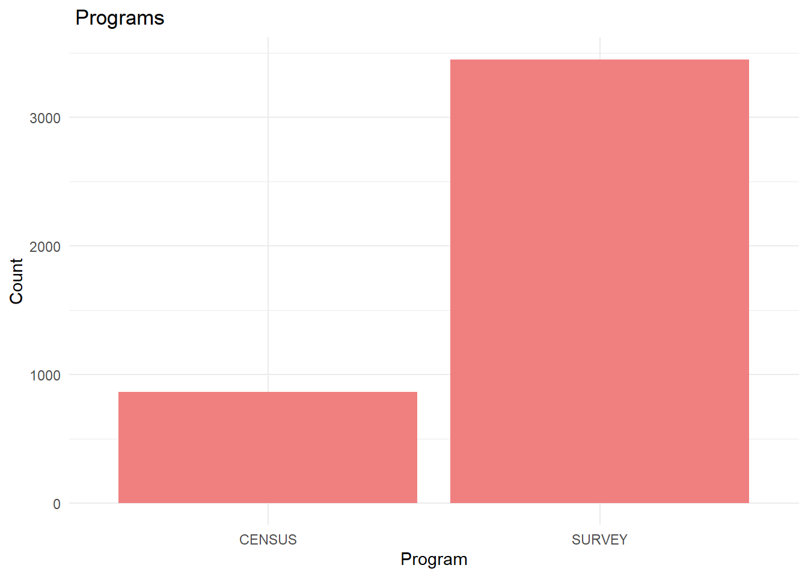
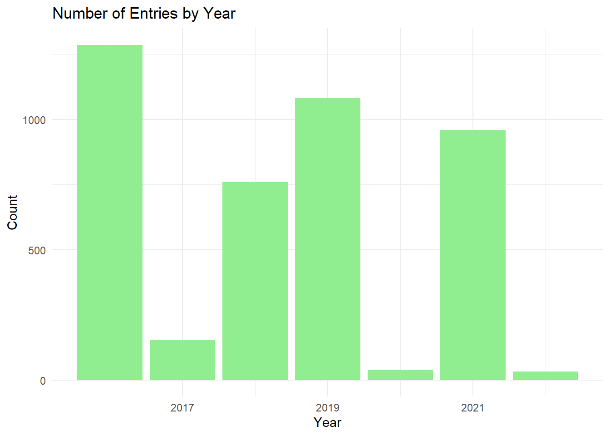
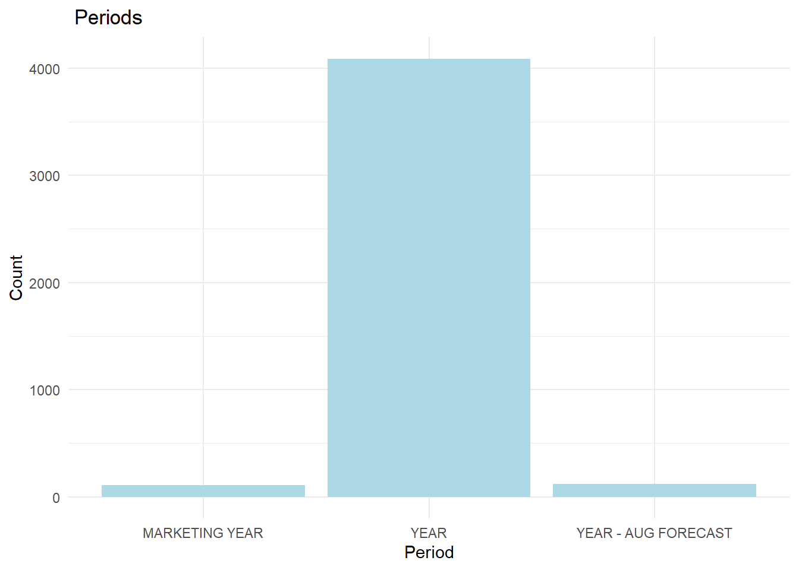
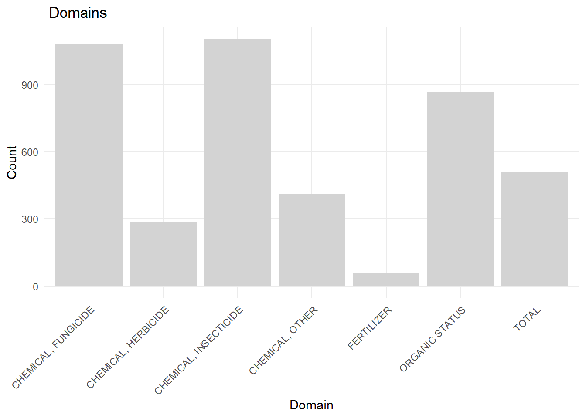

[1] "No Columns to drop"Stawberries: exploratory data analysis
Assignment
Using our class discussions and this document as a starting point, produce an EDA report. The report should describe the data itself so that readers understand the data sources used in the report and how you cleaned and organized the data for analysis.
The sections below suggest how the report might be organized. The report should be succinct, communicating the information that you believe will be helpful to someone doing a fuller analysis of the data or using the data for model building. Implementation details should be included in commentary that is included in code.
Sections of the document as it was originally presented in class have been commented so that you can see them in the code.
Data acquisition and assessment
- Data sources
- Assumptions and motivations
Data cleaning and organization
Outline the approach taked to clean and organize the data.
References
Material about strawberries
WHO says strawberries may not be so safe for you–2017March16
Pesticides + poison gases = cheap, year-round strawberries 2019March20
Multistate Outbreak of Hepatitis A Virus Infections Linked to Fresh Organic Strawberries-2022March5
Technical references
In their handbook “An introduction to data cleaning with R” by Edwin de Jonge and Mark van der Loo, de Jonge and van der Loo go into detail about specific data cleaning isssues and how to handle them in R.
“Problems, Methods, and Challenges in Comprehensive Data Cleansing” by Heiko Müller and Johann-Christoph Freytag is a good companion to the de Jonge and van der Loo handbook, offering additional insights.
Initial questions
- Initial questions about strawberries, the data, and about the work you are undertaking. Write these before you begin working.
The data
Describe the source and original condition of the data: organization, problems with the data that needed to be addressed and so on. Cite data sources.
The data set for this assignment has been selected from: USDA_NASS
The data have been stored on NASS here: USDA_NASS_strawb_2023SEP19
Make relevant observations in the document and in your code about data. Add commentary to the code so that anthoer analysts could use or extend your code.
Discusss missing data, inclding how you handled it. Be careful to point out where NA’s are being produced during processing and are not data missing in the original data.
Where it is relevant, include information of how you have organized the data for analysis. It might, for example, be helpful to know that there is both agricultural census data and survey data. It might be helpful to discuss data that appears to be redundant between these two sources.
Make sure you include details in your discussion and in your code about other data and information you used in your work. Cite sources and provide detail that would allow another analyst to reproduce your work.
EDA
Once the data has been cleaned and organized, you must conduct your own EDA. Be sure to include a discussion of your analysis of the chemical information, including citations for data and other information you have used. Visualizations should play a key role in your analysis. Plots should be labeled and captioned.
stb_survey <- strwb_survey %>%
filter(str_detect(`Data Item`, "MEASURED IN")) %>%
mutate(`Data Item` = str_extract(`Data Item`, "(?<=MEASURED IN ).*"))
stb_survey <- stb_survey %>%
mutate(
Chemical = if_else(str_detect(`Domain Category`, "\\(.*=.*\\)"),
str_extract(`Domain Category`, "(?<=\\().*?(?=\\=)"),
NA_character_),
Chemical_Code = if_else(str_detect(`Domain Category`, "\\(.*=.*\\)"),
str_extract(`Domain Category`, "(?<=\\=).*?(?=\\))"),
NA_character_)
)
stb_survey <- subset(stb_survey, select = -Program)
stb_survey <- subset(stb_survey, select = -`Domain Category`)Dealing with Missing Values, Outliers, and Duplicates
stb_survey <- stb_survey[, !sapply(stb_survey, function(col) all(is.na(col)))]
stb_survey <- stb_survey[!is.na(stb_survey$Value), ]
stb_survey <- stb_survey[stb_survey$State != "OTHER STATES", ]strwb_census$`CV (%)`<- as.numeric(strwb_census$`CV (%)`)Warning: NAs introduced by coercionstrwb_census <- strwb_census %>%
select(-Program,-`Period`,-Fruit,-crop_type,-Domain,-`Domain Category`)###My EDA 1. Distribution of Program:
library(ggplot2)
ggplot(strawberry, aes(x=Program)) +
geom_bar(fill="lightcoral") +
theme_minimal() +
labs(title=" Programs", x="Program", y="Count")
- Distribution of Entries by Year:
ggplot(strawberry, aes(x=Year)) +
geom_bar(fill="lightgreen") +
theme_minimal() +
labs(title="Number of Entries by Year", x="Year", y="Count")
- Distribution of Period:
ggplot(strawberry, aes(x=Period)) +
geom_bar(fill="lightblue") +
theme_minimal() +
labs(title=" Periods", x="Period", y="Count")
4.Distribution of Domain:
ggplot(strawberry, aes(x=Domain)) +
geom_bar(fill="lightgray") +
theme_minimal() +
theme(axis.text.x = element_text(angle = 45, hjust = 1)) +
labs(title=" Domains", x="Domain", y="Count")
These references have been left in the document to help while you are writing. Cite those you use and drop the rest from the final document.
Quick Stats Column Definitions
for EPA number lookup epa numbers
Active Pesticide Product Registration Informational Listing
pc number input pesticide chemical search
ACToR – Aggregated Computational Toxicology Resource
The EPA PC (Pesticide Chemical) Code is a unique chemical code number assigned by the EPA to a particular pesticide active ingredient, inert ingredient or mixture of active ingredients.
Investigating toxic pesticides
step 2 to get label (with warnings) for products using the chemical
International Chemical safety cards
Pesticide Product and Label System
Active Pesticide Product Registration Informational Listing
NPIC Product Research Online (NPRO)
Databases for Chemical Information
TSCA Chemical Substance Inventory